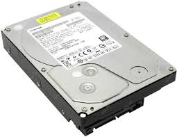
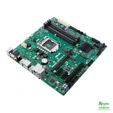
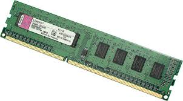
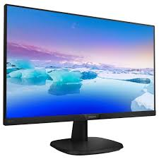
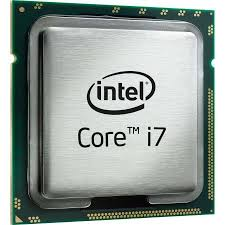

| 1 |  | Жорстки́й диск,[1] або жорстки́й магні́тний диск[2], або накопичувач на магнітних дисках (англ. hard (magnetic) disk drive, англ. HDD), у комп'ютерному сленгу — «вінчестер» (від маркування набоїв гвинтівки «Вінчестер», англ. Winchester) — магнітний диск, основа якого виконана з твердого матеріалу.[3][2] У більшості ЕОМ виконує функцію енергонезалежного носія інформації (комп'ютерної пам'яті чи нагромаджувача інформації) з довільним доступом (англ. random access) |
| 2 |  | Матери́нська пла́та, систе́мна пла́та, ба́зова пла́та[1] (англ. motherboard), відома також як головна плата (англ. mainboard) — плата, на якій містяться основні компоненти комп'ютера, що забезпечують логіку. Плата є основою не лише персонального комп'ютера, а також смартфонів, гральних консолей. |
| 3 |  | Оперативна пам'ять — швидкодійна пам'ять, призначена для запису, зберігання та читання інформації у процесі її обробки. |
| 4 |  | Моніто́р (monitor — слідкувати) або дисплей (display — відображувати) — електронний пристрій для відображення інформації. Пристрій, призначений для відтворення відеосигналу і візуального відображення інформації, отриманої від комп'ютера. |
| 5 |  | Центральний процесор, ЦП (англ. Central processing unit, CPU) — функціональна частина комп'ютера, що призначена для інтерпретації команд. |